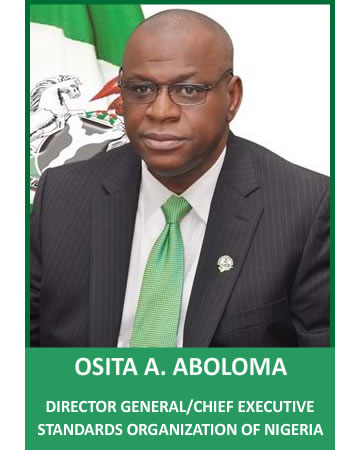

Home
About SON
About SON
The STANDARDS ORGANISATION OF NIGERIA (SON) is the apex standardization body in Nigeria.
SON was established by SON Act No. 14, 2015, which repeals the Standards Organisation of Nigeria Act, Cap 59 laws of Federal Republic of Nigeria, 2004, and Enact the STANDARDS ORGANISATION OF NIGERIA Act. 2015 for the purpose of providing additional functions for the organisation, increasing penalty for violation, and for related matters.
This SON Act 2015 , has now replaced the Enabling Act No. 56 of 1971 which has three amendments: (Act No. 20 of 1978, Act No. 32 of 1984 and Act No. 18 of 1990).
The aims and objectives of the SON include:
- Preparation of standards relating to products, measurements, materials and processes among others, and their promotion at the national, regional and international levels;
- Certification of industrial products;
- Assistance in the production of quality goods;
- Improvement of measurement accuracy and circulation of information relating to standards.
Standards Council of Nigeria The SON’s governing body is known as the Standards Council of Nigeria (hereinafter called the “Council”). This is the policy-making body for supervising the administration and financial management of SON. The Council is responsible for among other things:
- Advising the Federal Government of Nigeria generally on the national policy on standards;
- Standards specifications;
- Quality control and metrology;
- Designating, establishing and approving standards;
- Determining the overall policy of SON;
The Director-General of SON
The Director-General of SON is the Chief Executive, whose responsibilities revolve around the day-to-day administration of the organisation within the broad guidelines formulated by the Council.
Our Core Values
- Expertise
- Discipline
- Integrity
- Customer Focus
- Teamwork
SON WEBSITES